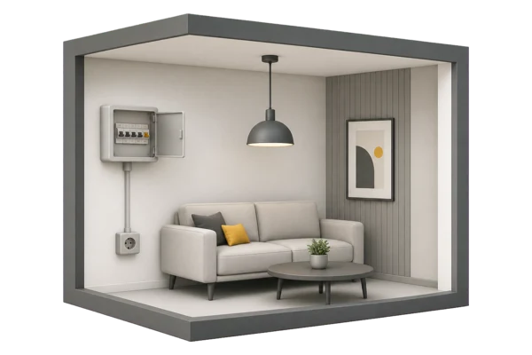
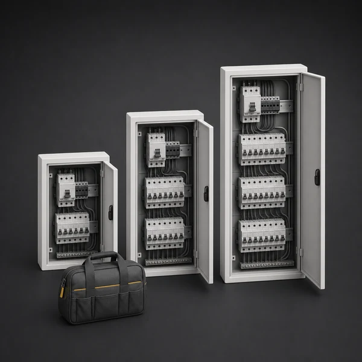
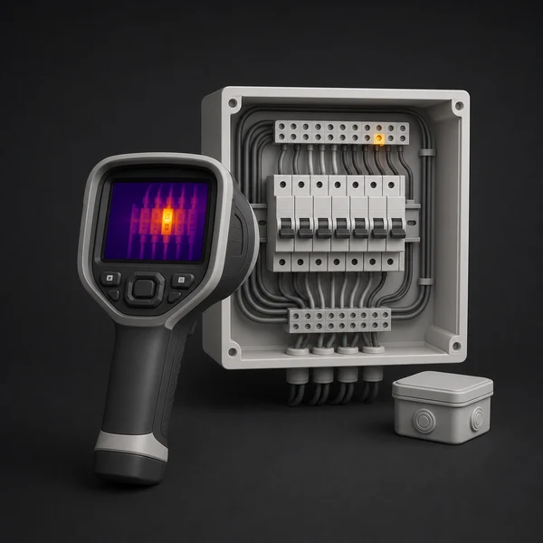
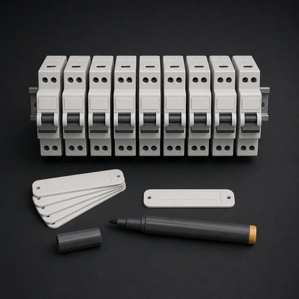
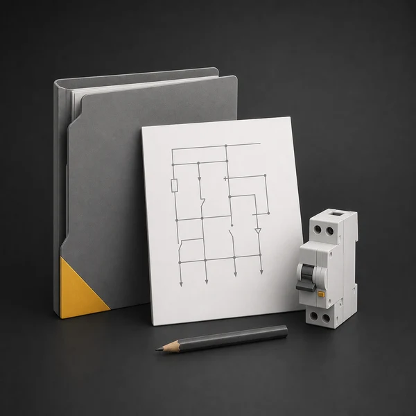

Плановый осмотр
Проверяем щиты, автоматы, контакты, повреждения, доступность обслуживания и порядок внутри электроустановки.
 Elecround
Elecround
Плановое обслуживание электрики в Москве и МО: протяжка контактов, тепловизионный контроль, поиск потребителей, маркировка групп, однолинейные схемы и диагностика щитов.
Проводим разовое и плановое техническое обслуживание действующих электроустановок в Москве и Московской области. Для регулярных работ согласуем график, перечень оборудования и обслуживание по договору.
Работаем с офисами, складами, производственными базами и коммерческими помещениями. Проверяем щиты, контактные соединения, нагрузки, маркировку и фактическую структуру линий.
Можно заказать разовый выезд или регулярное обслуживание. Состав работ подбираем по состоянию щитов, нагрузкам, режиму объекта и задачам эксплуатации.
Проверяем щиты, автоматы, контакты, повреждения, доступность обслуживания и порядок внутри электроустановки.
Ищем причины нагрева, отключений, запаха гари, нестабильной работы оборудования и перегрузки линий.
Определяем группы, подписываем автоматы и готовим понятную структуру щита для дальнейшей эксплуатации.
Проверяем и протягиваем контактные соединения в щитах, чтобы снизить риск перегрева, искрения, отключений и повреждения оборудования.
Узнать большеНаходим перегрев контактов, шин, клемм и автоматов под рабочей нагрузкой, чтобы вовремя устранить опасные участки.
Узнать большеОпределяем, какой автомат за что отвечает, восстанавливаем логику щита и делаем понятную маркировку для эксплуатации.
Узнать большеВосстанавливаем и оформляем однолинейные схемы по фактическому состоянию щита, групп и подключенных нагрузок.
Узнать большеПланово проверяем щиты, группы, освещение, нагрузки и контактные соединения на офисных и складских объектах.
Узнать большеИщем причины нагрева в электрощите: слабые контакты, перегрузку линий, устаревшую автоматику и ошибки коммутации.
Узнать большеДля обслуживания заранее уточняем тип объекта, количество щитов, режим доступа, нагрузку оборудования и ограничения по отключениям.

Квартиры, апартаменты и частные дома.
Учитываем планировку и доступ. Для жилых помещений заранее уточняем количество групп, состояние щита, доступ к помещениям, сроки и требования управляющей компании.
Цена зависит от количества щитов, состояния контактных соединений, объема диагностики, необходимости тепловизионного контроля, маркировки групп и подготовки схем.
Чем больше щитов, тем больше времени нужно на осмотр, протяжку, проверку и фиксацию замечаний.

Ослабленные, нагретые или поврежденные соединения требуют дополнительной диагностики и аккуратной работы.
Проверка под нагрузкой помогает найти перегрев, но требует согласованного режима работы объекта.

Если назначение автоматов неизвестно, дополнительно ищем потребителей и приводим подписи к факту.

На бюджет влияет, нужно ли оформить однолинейную схему, перечень замечаний или рекомендации.

На действующих объектах заранее согласуем окна доступа, отключения и порядок работ без простоя.
Собираем вводные: тип объекта, количество щитов, симптомы, режим работы, ограничения по отключениям и доступ к помещениям.
Разделяем обязательные действия и дополнительные задачи: протяжку, тепловизор, маркировку, поиск групп и схемы.
Осматриваем щиты, контакты, автоматы, нагрузки, маркировку и фиксируем замечания по фактическому состоянию.
Объясняем найденные риски, выполненные действия и даем рекомендации по дальнейшему обслуживанию или ремонту.
Да, разовый выезд подходит для оценки состояния щитов, поиска причин нагрева, протяжки контактов, маркировки групп или подготовки плана работ.
Да, обслуживаем коммерческие и технические объекты: офисы, склады, складские комплексы, магазины, производственные базы и помещения с оборудованием.
Тепловизионный контроль можно включить в состав обслуживания, а электролаборатория оформляется отдельной услугой, если нужны измерения и протоколы.